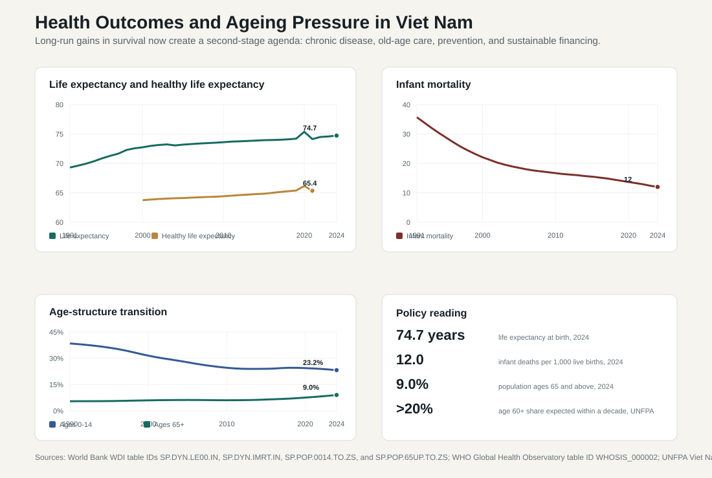
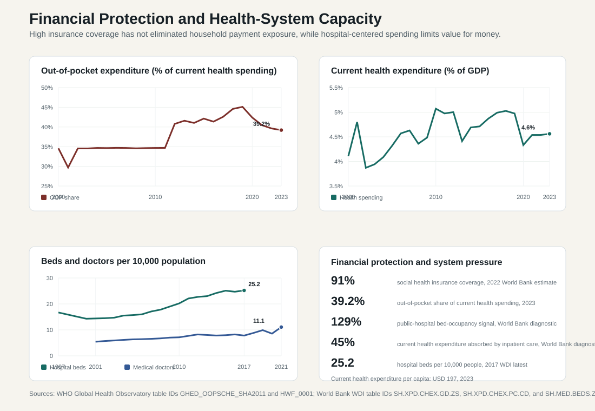

13.2 Health Care, Population Ageing, and Financial Protection
ASEAN comparative lens (2026). Vietnam should be read in ASEAN comparison as ASEAN's most prominent party-led, export-manufacturing upgrading case. Unlike the Philippines' service-remittance profile, Thailand's older industrial-tourism base, Malaysia's resource-industrial federal structure, or Indonesia's archipelagic domestic-market scale, Vietnam's comparative issue is how a socialist party-state manages very open global production networks. For this section, the regional comparison should compare education, health, welfare, water, sanitation, and human development as service-delivery tests across ASEAN's unequal income and capacity spectrum. Local comparable indicators show: population 100.99 million (2024), rank 3 among the nine ASEAN reports in this workspace; GDP US$476.39 billion (2024), rank 4 among the nine ASEAN reports in this workspace; GDP per capita US$4,717 (2024), rank 5 among the nine ASEAN reports in this workspace; real GDP growth 7.09% (2024), rank 1 among the nine ASEAN reports in this workspace; government effectiveness 0.09 (2023), rank 6 among the nine ASEAN reports in this workspace; internet use 84.15% (2024), rank 4 among the nine ASEAN reports in this workspace. Use `sources/documents/regional/asean_comparative_lens_2026.md` together with ASEANstats, ASEAN Secretariat materials, and the country processed-indicator files before making cross-ASEAN claims.
Education, health, and welfare are the social foundations of administrative performance. They determine whether citizens can participate productively in the economy, whether households can withstand shocks, and whether national development is translated into human capability. Viet Nam has achieved internationally recognized gains in basic health outcomes, maternal and child health, immunization, infectious-disease control, and health insurance expansion. But those achievements have changed the policy problem. The next stage is no longer only basic access. It is quality, prevention, financial protection, chronic-disease management, territorial equity, and system sustainability.
The health sector should therefore be read as a state-capacity issue. A capable health system is more than a set of hospitals. It is a coordinated system of insurance finance, primary care, public health surveillance, referral rules, workforce planning, pharmaceutical regulation, provincial delivery, digital records, emergency preparedness, and household financial protection. When these elements work, health policy supports productivity, social trust, and inclusive development. When they fail, illness becomes a source of poverty, hospitals become congested, and ageing becomes a fiscal and administrative burden.
13.2.1 Health Outcomes as a Development Success
Viet Nam's long-run health indicators show a major development achievement. World Bank WDI data show life expectancy at birth rising from 69.3 years in 1991 to 74.7 years in 2024. Infant mortality fell from 35.7 deaths per 1,000 live births in 1991 to 12.0 in 2024. These indicators are useful because they summarize the cumulative effects of nutrition, sanitation, maternal care, child health, immunization, infectious-disease control, living standards, and primary public-health administration.
The decline in infant mortality is especially important. It indicates that the health system reached children and mothers beyond the wealthiest urban populations. Lower infant mortality usually reflects better prenatal care, safer delivery, neonatal services, vaccination, nutrition, clean water, and household education. For a country that moved from postwar scarcity into middle-income development, this is a clear sign that state-led public health and broad social improvement produced measurable human capability gains.
Life expectancy, however, also signals the next policy challenge. Longer lives mean more years of potential productivity, but also more chronic disease, rehabilitation needs, long-term care, old-age income protection, and demand for continuous medical management. WHO's healthy-life-expectancy series shows that people do not live all added years in full health. The gap between life expectancy and healthy life expectancy is the space where chronic disease, disability, injuries, mental health, and long-term care become policy problems.

13.2.2 Population Ageing and the New Burden of Care
Viet Nam is ageing rapidly while still consolidating its middle-income development model. WDI age-structure data show the population aged 65 and above rising from 5.5 percent in 1990 to 9.0 percent in 2024, while the population aged 0-14 fell from 38.5 percent to 23.2 percent over the same period. UNFPA warns that within about a decade more than one in five Vietnamese citizens will be over age 60, marking the transition into an aged society. This creates a difficult sequencing problem: Viet Nam is becoming old before it has fully completed industrial upgrading, pension deepening, and health-system quality reform.
Ageing changes the logic of health administration. A younger public-health agenda can focus heavily on infectious disease, maternal and child health, vaccination, and basic curative care. An older society requires continuous management of cardiovascular disease, cancer, diabetes, chronic respiratory illness, stroke, dementia, musculoskeletal disease, depression, injuries, and disability. It also requires rehabilitation, home-based care, nursing, geriatric medicine, assistive devices, social care, and family support.
The political economy of ageing is also demanding. Older people use more health services, rely more on fixed income sources, and may require family caregivers who withdraw time from the labor market. If the health system remains hospital-centered, ageing will increase congestion and spending pressure. If primary care becomes credible and preventive, ageing can be managed with earlier screening, medication adherence, lifestyle support, rehabilitation, and community care. The administrative choice is therefore not whether Viet Nam will age, but whether it will age through a hospital queue or through a more integrated care model.
13.2.3 Epidemiological Transition and Noncommunicable Disease
Viet Nam's disease burden is shifting toward noncommunicable diseases. Cardiovascular disease, cancer, diabetes, chronic respiratory disease, mental health conditions, kidney disease, road injuries, and pollution-related illness require continuous care rather than one-time treatment. This changes health administration in three ways.
First, prevention becomes more valuable. Tobacco control, alcohol regulation, diet, physical activity, air quality, road safety, occupational health, and early screening become core health policies, even though many of these instruments sit outside the Ministry of Health. Second, primary care becomes more important. Chronic disease is managed through regular follow-up, medication adherence, laboratory monitoring, referral discipline, and patient education. Third, information systems become essential. A chronic-disease system needs records that follow patients across commune, district, provincial, private, and central facilities.
This is why WHO's recent reform language for Viet Nam emphasizes primary health care, disease prevention, essential care, health security, healthier environments, digital transformation, and investment in grassroots health services. The policy direction is sensible because a hospital-centered system can treat severe episodes, but it is less effective at preventing the conditions that create expensive admissions in the first place.
13.2.4 Financial Protection: Coverage Is Not Enough
Viet Nam has expanded social health insurance impressively, but high coverage has not eliminated household payment risk. The World Bank's 2025 report on household out-of-pocket spending states that health insurance coverage reached about 91 percent in 2022, while out-of-pocket spending still remained about 40 percent of current health expenditure. WHO/GHED data show the same structural problem: household out-of-pocket expenditure was 34.6 percent of current health expenditure in 2000, rose above 40 percent after 2012, peaked at 45.1 percent in 2019, and was still 39.2 percent in 2023.
This distinction is crucial. Insurance enrollment measures whether people are formally covered. Financial protection measures whether illness still forces households to pay unaffordable amounts, delay care, borrow money, sell assets, or accept lower-quality treatment. A country can have high insurance coverage and still have weak financial protection if medicines, diagnostics, copayments, uncovered services, informal payments, private outpatient care, transport, and higher-level hospital costs remain heavily borne by households.

The household burden also has distributional consequences. Poorer households may avoid care, use lower-quality providers, or suffer catastrophic spending. Better-off households may spend more in absolute terms because they can access specialized or private services, but vulnerable groups face higher welfare risk from smaller payments. The World Bank report also highlights pharmaceutical spending as a major component of household out-of-pocket payments. That matters administratively because drug coverage, formulary rules, prescription enforcement, pharmacy regulation, and medicine quality are not side issues. They are central to financial protection.
Viet Nam's health expenditure has increased in absolute terms but remains moderate relative to the scale of need. WDI data show current health expenditure at 4.1 percent of GDP in 2000, 5.1 percent in 2010, and 4.6 percent in 2023. Current health expenditure per person rose from about USD 21 in 2000 to about USD 197 in 2023. The rise in per-capita spending reflects income growth and health-system expansion, but it also means the insurance fund, state budget, and households must manage higher expectations and more expensive technology. The fiscal question is therefore not only how much Viet Nam spends, but whether spending buys prevention, continuity, quality, and value for money.
13.2.5 Hospital-Centered Care and Overcrowding
Hospital congestion is one of the most visible symptoms of Viet Nam's second-generation health challenge. Patients often bypass commune or district facilities and go directly to provincial or central hospitals because they distrust local quality, seek specialists, believe higher-level hospitals provide better diagnostics, or expect insurance coverage to work more reliably at larger facilities. The result is a self-reinforcing cycle: local facilities remain underused and undertrusted, while major hospitals become crowded and expensive.
The World Bank's 2025 hospital-sector diagnostic describes this as hospital-centrism. It reports that official average bed occupancy in 2020 was 129 percent, and that Viet Nam spends about 45 percent of current health expenditure on inpatient care. These figures are more than operational details. They reveal a system in which care is pulled upward into hospitals, even when prevention, outpatient management, and primary care could deliver better value.
Hospital-centered care creates several problems. It raises costs, increases waiting time, reduces continuity of care, burdens rural patients who must travel, and diverts resources away from prevention. It can also weaken quality because crowded facilities face pressure on staff time, infection control, patient communication, and follow-up. Expanding hospital capacity may be necessary in some places, but building more beds cannot be the only answer. WDI hospital-bed data, converted from beds per 1,000 people to beds per 10,000 people, show an increase from 14.3 beds per 10,000 people in 2000 to 25.2 in 2017, the latest available internationally comparable WDI point in the local dataset. This indicates physical capacity expansion, but the occupancy evidence shows that capacity growth has not removed the hospital-pressure problem. If referral incentives, payment rules, patient trust, and primary-care quality remain weak, new capacity may simply fill up.
13.2.6 Primary Health Care and Grassroots Reform
The central reform task is to make primary health care credible. Commune health stations, district facilities, family doctors, nurses, pharmacists, and community health workers should be the first line for prevention, screening, chronic-disease follow-up, health education, vaccination, maternal care, nutrition advice, and early detection. But this only works if citizens trust the quality of local services and if insurance payment rules reward appropriate care at the right level.
Primary health care reform requires more than slogans. It needs staffing, medicines, diagnostics, electronic records, referral protocols, clinical guidelines, quality supervision, public communication, and financing. It also requires a change in provider incentives. Fee-for-service payment can encourage more tests, medicines, and hospital episodes. Strategic purchasing, capitation, case-based payment, and performance-linked financing can help shift resources toward prevention and appropriate care, but they must be designed carefully to avoid under-provision or risk selection.
The policy direction in 2025 suggests that Viet Nam recognizes the problem. WHO reported that Viet Nam's reform agenda gives priority to primary health care, essential care, disease prevention, public health security, healthier environments, digital transformation, and grassroots services. WHO also welcomed National Assembly measures connected to a National Target Programme on Health Care, Population and Development for 2026-2035, intended to strengthen disease prevention, equity, sustainability, and support for vulnerable populations. These measures point toward a shift from hospital expansion alone to people-centered and prevention-oriented care.
13.2.7 Regional Inequality and Territorial Administration
National averages conceal territorial variation. Viet Nam's health system serves dense urban centers, export-industrial provinces, deltas, coastal regions, mountainous areas, border provinces, and ethnic minority communities. Urban residents often have better access to specialized hospitals, private providers, advanced diagnostics, and digital services. Rural and remote residents depend more heavily on commune and district facilities, and may face distance, language, transport, income, staffing, and information barriers.
This creates a governance problem. Health policy is nationally financed and regulated, but service quality is locally experienced. Provincial governments manage facilities, workforce allocation, investment priorities, public-private relationships, preventive campaigns, and emergency response. If decentralization gives responsibility without adequate resources or technical capacity, poorer localities may fall behind. If central rules are too rigid, local needs may be poorly served. The administrative challenge is to preserve national equity while allowing local delivery to adapt to geography, disease burden, and population structure.
The 2025 administrative reorganization may matter for health delivery. Larger provincial-level units could improve planning for referral networks, emergency services, medical logistics, workforce deployment, digital health systems, and specialized facilities. But reorganization can also disrupt service management if facility ownership, budgets, staffing, and data systems are not integrated smoothly. Health reform therefore has to be coordinated with broader local-government reform.
13.2.8 Workforce, Quality, and the Mixed Health System
Health workforce capacity is a binding constraint. WHO/GHO data show medical doctors rising from 5.4 per 10,000 population in 2001 to 11.1 in 2021. Together with the increase in hospital beds, this suggests that Viet Nam's service capacity has improved materially: more facilities, more clinical personnel, and higher per-capita health spending make it possible to treat more patients and offer more complex care than in the early 2000s.
The quality interpretation must still be cautious. Beds and doctors are input indicators, not direct measures of quality. More beds can coexist with overcrowding if patients bypass lower-level facilities. More doctors can coexist with uneven quality if skilled personnel are concentrated in Hanoi, Ho Chi Minh City, provincial capitals, and specialized hospitals. Ageing and chronic disease also require a broader skill mix: family doctors, nurses, geriatric specialists, rehabilitation workers, mental health professionals, public-health officers, pharmacists, data managers, and community health workers. The issue is therefore not only the number of doctors. It is their distribution, incentives, training, continuing education, and ability to work in teams.
Quality of care is the next frontier of legitimacy. The capacity indicators point in a positive direction, but they do not prove that clinical outcomes, patient safety, referral discipline, or territorial equity have improved at the same rate. As income rises, citizens expect accurate diagnosis, safe medicines, respectful treatment, shorter waiting times, infection control, continuity of care, and transparent information. Quality reform requires accreditation, clinical guidelines, facility performance indicators, patient-safety systems, health technology assessment, electronic medical records, and stronger regulation of both public and private providers. Trust in primary care is especially important because people will not follow referral rules if they believe local services are poor.
Private-sector growth adds another layer. Rising income and dissatisfaction with crowded public hospitals have encouraged private clinics, pharmacies, hospitals, diagnostics, and digital health services. Private providers can increase choice and reduce pressure on public facilities, but they can also deepen inequality if higher-quality services are available mainly to affluent urban residents. Regulation must therefore cover licensing, pricing transparency, clinical quality, insurance contracting, data reporting, patient safety, and consumer protection.
13.2.9 Digital Health and Public Health Security
Digital health can help Viet Nam solve distance, coordination, and efficiency problems. Electronic medical records, digital insurance claims, telemedicine, remote consultation, medicine supply-chain tracking, AI-assisted diagnosis, and disease surveillance can reduce fragmentation. Digital systems can also help the insurance fund monitor claims, detect inappropriate payments, track out-of-pocket costs, and improve strategic purchasing.
But digitalization is not a magic solution. It requires interoperability, privacy protection, cybersecurity, data governance, digital literacy, and clear rules for private platforms. If digital tools are built as separate applications that do not share data, they may add fragmentation rather than reduce it. If they are designed only for urban hospitals, they may widen territorial inequality. The administrative goal should be integrated public health infrastructure, not platform proliferation.
Public health security also extends beyond hospitals. Viet Nam has experience in infectious-disease response, but future risks include pandemics, antimicrobial resistance, climate-related disease, air pollution, heat stress, flooding, food safety, tobacco, e-cigarettes, road injuries, and environmental health. These risks require coordination across health, transport, education, environment, agriculture, labor, urban planning, finance, and local government. Health policy is therefore intersectoral by nature.
13.2.10 Interpretation and Policy Implications
Viet Nam's health-care challenge should be understood as a transition from coverage expansion to system quality. The country has already built important foundations: broad health insurance coverage, a public health network, improving survival indicators, growing medical capacity, and strong state commitment. The next stage is more difficult because it requires institutional redesign. Viet Nam must make primary care credible, reduce unnecessary hospital use, protect households from high out-of-pocket costs, manage chronic disease, regulate private providers, improve workforce distribution, and use digital tools responsibly.
Viet Nam's health progress is no longer in doubt. The harder transition is from basic coverage and hospital-based treatment toward equitable, preventive, financially protective, and quality-oriented care. If this transition succeeds, health policy will support productivity, social trust, and inclusive development. If it fails, ageing, chronic disease, hospital congestion, and high household payments may become major constraints on the next stage of development.
| Policy issue | Main problem | Policy implication |
|---|---|---|
| Health insurance coverage | Formal coverage is high, but financial protection remains incomplete. | Reform benefit packages, copayments, drug coverage, reimbursement, and monitoring of household payments. |
| Out-of-pocket spending | Household payments remain close to 40 percent of current health expenditure. | Reduce catastrophic spending, improve affordability, and strengthen pharmaceutical coverage and regulation. |
| Population ageing | Older population increases chronic disease, rehabilitation, and care needs. | Build geriatric, rehabilitation, home-care, long-term care, and community support systems. |
| Noncommunicable disease | Chronic conditions require continuous management rather than episodic treatment. | Strengthen prevention, screening, primary care, medication adherence, and patient records. |
| Hospital congestion | Patients bypass lower-level facilities and crowd tertiary hospitals. | Improve referral systems, district care, family medicine, patient trust, and payment incentives. |
| Beds and physical capacity | Hospital beds per 10,000 people increased, but bed expansion alone has not resolved overcrowding. | Use capacity planning with referral reform, primary-care strengthening, infection control, and hospital-quality indicators. |
| Primary health care | Grassroots facilities often lack staff, medicines, diagnostics, and trust. | Invest in commune and district care, public health, chronic-disease management, and quality supervision. |
| Regional inequality | Remote and minority areas face weaker effective access. | Use targeted financing, workforce incentives, mobile services, language-sensitive care, and telemedicine. |
| Health workforce | Medical doctors per 10,000 people increased, but skilled personnel remain unevenly distributed. | Reform training, deployment, career incentives, nursing, family medicine, geriatrics, and continuing education. |
| Private sector | Private services expand but may deepen inequality and quality variation. | Strengthen licensing, clinical standards, pricing transparency, insurance contracting, and data reporting. |
| Digital health | Digital tools can improve access but create data and equity risks. | Build interoperable records, privacy rules, cybersecurity, claims systems, and rural digital access. |
| Public health security | Climate, air pollution, pandemics, tobacco, and road injuries create new risks. | Strengthen intersectoral prevention, surveillance, emergency preparedness, and healthier environments. |
| Fiscal sustainability | Ageing and chronic disease raise long-term spending pressure. | Use strategic purchasing, payment reform, prevention-oriented spending, and value-for-money assessment. |
Health care is therefore not only a welfare sector. It is part of Viet Nam's growth strategy and administrative modernization. A healthier population supports longer working lives, better learning, higher productivity, and stronger household resilience. Conversely, high out-of-pocket health spending can reduce consumption, increase debt, and push vulnerable households into poverty. Hospital congestion imposes hidden time costs on families. Chronic disease reduces productivity if it is not managed early. For these reasons, health reform belongs at the center of Viet Nam's next development agenda.